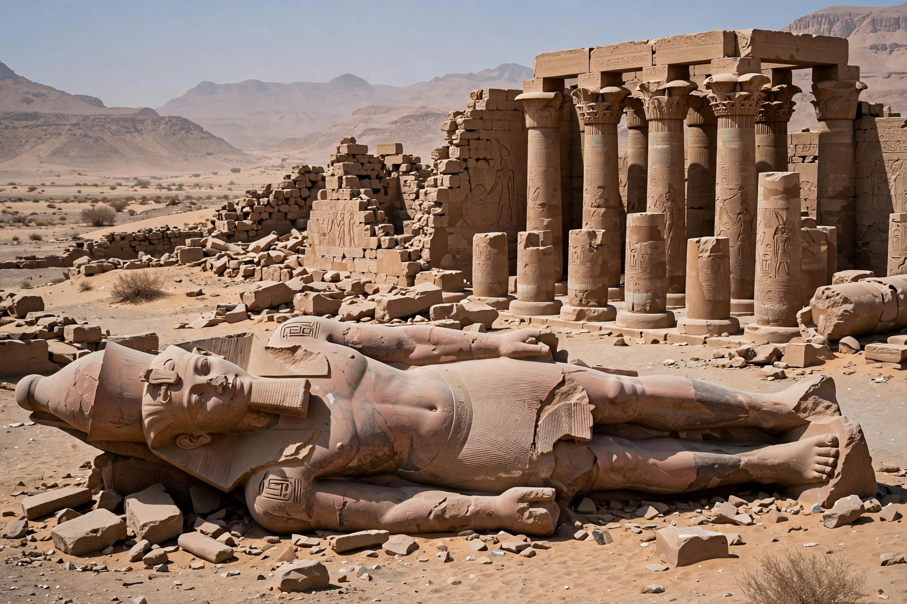

Ramesseum
| Ramesseum | |
|---|---|
 | |
| Location | Theban Necropolis, Luxor, Egypt |
| Built for | Pharaoh Ramesses II (19th Dynasty) |
| Constructed | 13th century BC |
| Type | Mortuary temple |
| Ancient name | "United with Thebes" — the house of millions of years of Usermaatre Setepenre |
The Ramesseum is the mortuary temple of Pharaoh Ramesses II of the 19th Dynasty, located in the Theban Necropolis on the west bank of the Nile opposite modern Luxor. Built over roughly two decades in the 13th century BC, the great complex celebrated the king's reign and ensured his cult after death. Its ruins — pylons, columned halls, and the shattered colossus of the king — have been famous since antiquity and inspired Percy Bysshe Shelley's sonnet "Ozymandias".
Layout and decoration
The temple follows the classic New Kingdom mortuary-temple plan: two massive pylons fronting open courts, followed by hypostyle halls and sanctuaries. Reliefs on the first pylon and walls depict Ramesses' campaigns, most famously the Battle of Kadesh against the Hittites, accompanied by the "Poem of Pentaur". The second court contained the colossal seated statue of the king known to Greek travellers as the "Younger Memnon" — a figure of about 19 metres carved from a single block of granite, now fallen and broken; its head and torso (the Younger Memnon proper) were removed by Giovanni Belzoni in 1816 and are in the British Museum.
Associated structures
Behind the temple stood a royal palace, administrative buildings, storehouses and a small temple of the king's mother Tuya and his wife Nefertari. The surrounding mudbrick granaries and magazines testify to the temple's role as a major economic institution. In later periods the site served as a quarry, a Christian church, and a burial ground.
Rediscovery
The name "Ramesseum" was coined by Jean-François Champollion, who studied the ruins in 1829. Excavations and conservation, notably by James Quibell in the 1890s and by French missions in the 20th and 21st centuries, continue to document the complex, part of the UNESCO World Heritage listing for ancient Thebes.